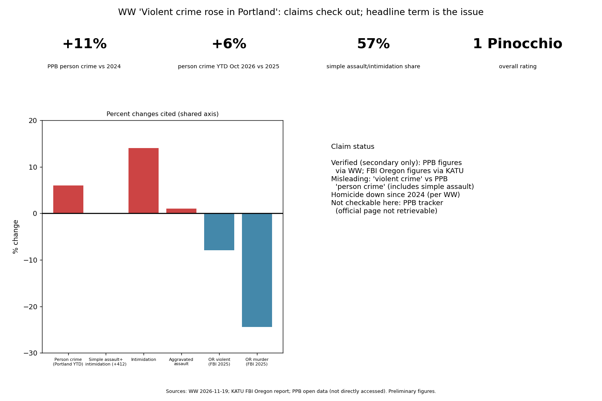

Fact-check: WW "Violent crime rose in Portland over past two years"

Findings: 1 Pinocchio. The numbers hold up; the "violent crime" label overstates them
Every figure I could trace matched its source. The headline uses "violent crime", but the data is the Portland Police Bureau's "person crime" category. That category is driven by simple assault and intimidation (57% of person offenses, up more than 412 offenses). Aggravated assault is up only about 1% (14 offenses) and homicide is down. The FBI's own violent-crime definition (murder, rape, robbery, aggravated assault) is not what rose.
- Person crime up 11% vs 2024 and 6% YTD through October vs 2025: matches WW's reading of the PPB tracker. I could not open the PPB tracker itself, so I could only confirm this secondhand.
- FBI Oregon: violent crime -7.9% and murder -24.4% (2024 to 2025); property crime -12.1%, burglary -20.4%; about -16% YTD through August 2026. These match KATU's report of the FBI release. Preliminary figures.
- Portland property crime: about -4% in 2025, +1 point in 2026. Not independently checked.
- PPB's "don't have much insight" quote: only seen through summaries of the article.
Caveats
I read the article only through a summarizing fetch tool, so exact quotes were not verified verbatim. The comparison of Portland (PPB offenses) with Oregon (FBI) mixes definitions and geographies.
Sources
- https://www.wweek.com/news/2026/11/19/violent-crime-rose-in-portland-over-past-two-years/
- https://katu.com/news/local/oregon-violent-crime-vehicle-thefts-statistics-fbi
- https://www.portland.gov/police/open-data/reported-crime-data (not accessed)